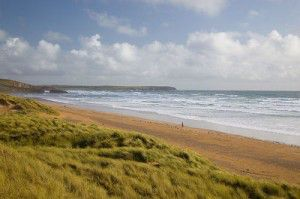
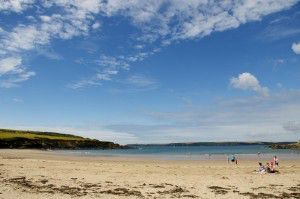
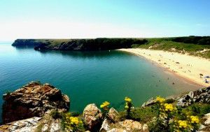
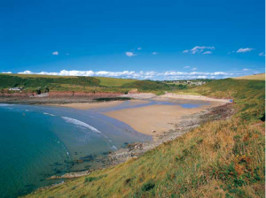

Beaches in Pembrokeshire
It’s official: Pembrokeshire has been voted the second-best coastal destination in the world by National Geographic Traveler magazine. Lonely Planet said the Pembrokeshire coast is "one of the best long-distance trails in the world". Pembrokeshire has many different types of beaches from the long and sandy Freshwater West which is perfect for surfing to the hidden cove of Barafundle Bay. Due to Pembrokeshire’s unique geology, no two beaches are alike they range from flat dunes to stunning cliffs. Below is a selection of our favourite beaches.
Freshwater West
 This is our local beach, just a short drive away. It offers free parking, toilet facilities and a mobile cafe which is open most days. There are lifeguards during summer months. It is 0.7 miles long and is surrounded by scenic sand dunes. It was recommended as the beach of the week by The Telegraph newspaper and is arguably the most consistent surfing beach in all of Wales and an unspoiled gem of Pembrokeshire.
West Angle Bay
West Angle Bay is further along the coast from Freshwater West, but it is still only a short drive away from Pen-y-Holt Farm. West Angle Bay is a sheltered sandy beach perfect for swimming and ideal for families with small children who want to go paddling and build sandcastles. There is a paid car park available near the beach, there are also toilet facilities and a cafe beside the beach.
Barafundle Bay

Barafundle Bay is a multi-award-winning beach. It has been voted Britain’s best picnic spot and also won awards in the world’s best beaches competition! Barafundle Bay is hidden away amongst stunning cliffs and there is a 0.5-mile walk along the coastline from the paid car park to get to it, but the effort is worth the reward.
Manobier Beach

Manorbier Beach is a small but beautiful sandy beach, a little bit off the beaten track. It is another great surfing beach and not too far from Pen-y-Holt Farm either. There is an imposing 12th-century medieval castle which is very well preserved and can be seen from the beach. The castle has both tearooms and toilet facilities available. Just to the south end of the beach, there is a coastal walk which leads to Stackpole Head. There is a paid car park available near the beach which can get busy during the summer.